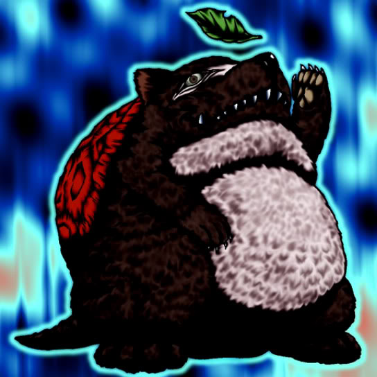

Turtle Raccoon

Description: "Teleports to own Summoning Area when this card is flipped face-up. When this card is flipped face-up in battle, that battle is canceled."
STATS
ATK: 700
DEF: 900DECK COST
Deck Cost per Card: 21EFFECT NOT IMPLEMENTED
Fusion List (10 Possible Fusions)
- Turtle Raccoon + Ancient Jar = Boulder Tortoise
- Turtle Raccoon + Droll Bird = Turtle Bird
- Turtle Raccoon + Haniwa = Boulder Tortoise
- Turtle Raccoon + Mega Thunderball = Bolt Escargot
- Turtle Raccoon + Morphing Jar = Boulder Tortoise
- Turtle Raccoon + Muka Muka = Boulder Tortoise
- Turtle Raccoon + Mystical Elf = 30,000-Year White Turtle
- Turtle Raccoon + Nemuriko = 30,000-Year White Turtle
- Turtle Raccoon + Oscillo Hero #2 = Bolt Escargot
- Turtle Raccoon + Stone Ghost = Boulder Tortoise